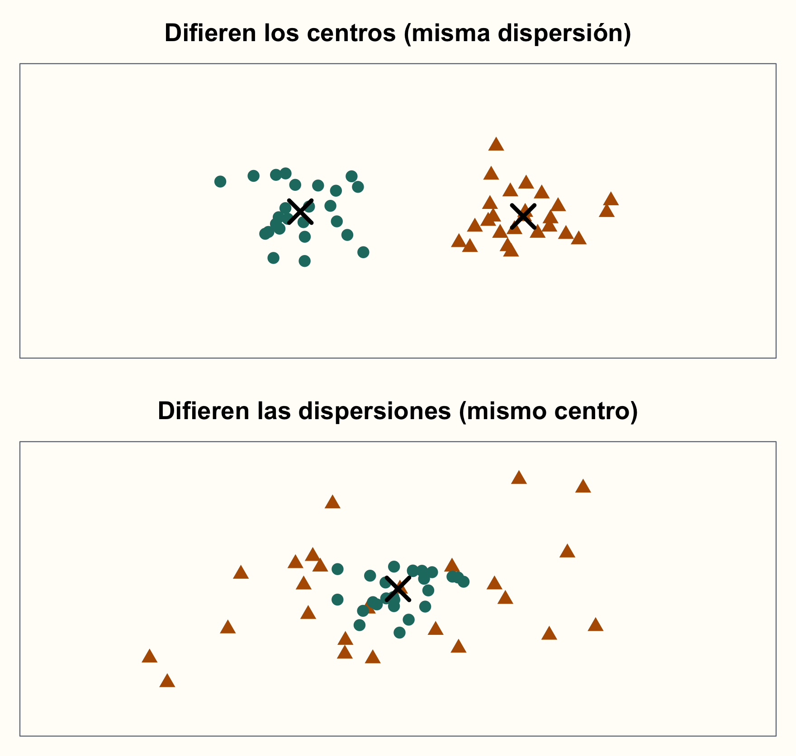
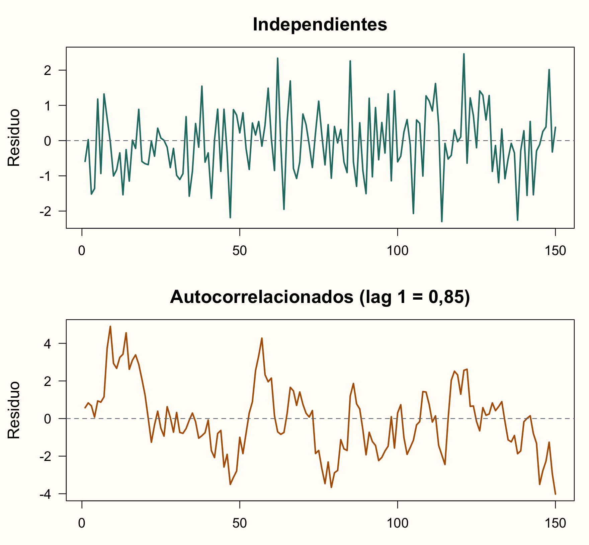
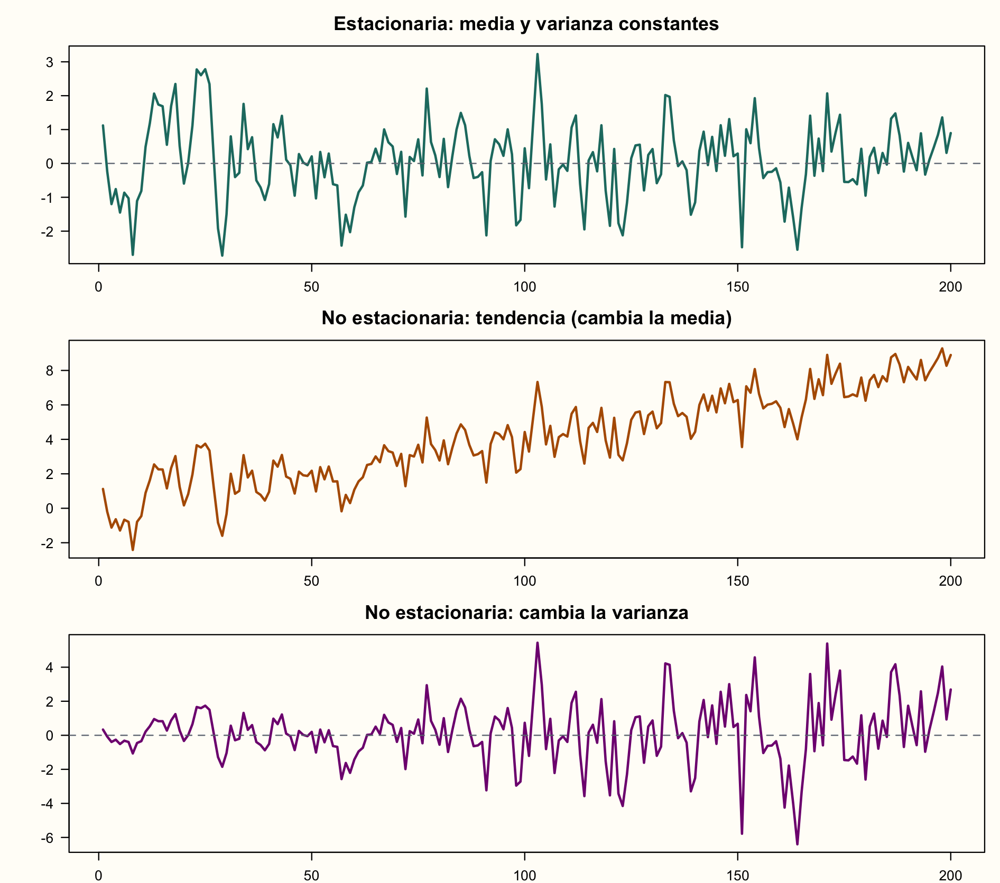

MANOVA, PERMANOVA y series de tiempo
Bioestadística · Clase 12
Prof. Javier Lopatin · javier.lopatin@uai.cl
Hoy
Clase 12
Parte 1 · Comparar grupos multivariantes Varias respuestas a la vez: MANOVA, PERMANOVA y betadisper (su supuesto).
Parte 2 · Series de tiempo Tendencia, autocorrelación, estacionariedad, ciclos, correlación cruzada y pronóstico evaluado.
La idea que une la clase: las observaciones no siempre son independientes, y eso cambia cómo se analizan.
Comparar grupos multivariantes
Parte 1 · MANOVA · PERMANOVA · betadisper
Varias respuestas a la vez
MANOVA · Definición
A veces se miden dos o más variables de respuesta en el mismo experimento. Se puede analizar cada una por separado, y es lo típico.
Una respuesta multivariante Pero a veces conviene tratar el grupo de respuestas como una sola respuesta multivariante: la función es manova(), el análisis multivariante de la varianza.
Sin término de Error manova() no admite ANOVA multiestrato: la fórmula no puede incluir un término Error() (medidas repetidas, parcelas divididas).
Los datos: film plástico
Práctico 14 · MANOVA
Respuestas (Y) tear (resistencia al rasgado), gloss (brillo) y opacity (opacidad).
Factores rate (tasa de extrusión) y additive (cantidad de aditivo): Low / High.
Ajuste del modelo
Práctico 14 · MANOVA
Efectos multivariantes significativos de rate y additive; la interacción no.
Las pruebas F usan 3 y 14 gl (no 1 y 16).
Pillai es el más robusto; Wilks, el más citado. Con factores de 2 niveles los cuatro estadísticos dan el mismo F.
¿Qué son Pillai y Wilks?
MANOVA · Estadísticos
MANOVA compara la variación entre grupos (la del efecto, H) con la variación dentro de los grupos (residual, E). Con varias respuestas no hay un solo cociente F: hay varias formas de resumir H frente a E.
Pillai (traza de Pillai-Bartlett) Proporción de la variación multivariante que explica el efecto. Va de 0 a 1: mayor = efecto más fuerte (como un R²). El más robusto si no se cumplen los supuestos; el que R usa por defecto.
Wilks (lambda de Wilks) Proporción de la variación que el efecto no explica: |E| / |H + E|. Va de 0 a 1: menor = efecto más fuerte (como 1 − R²). El más usado en publicaciones.
En el ejemplo, rate: Pillai = 0,618 y Wilks = 0,382; suman 1 porque rate tiene 1 gl. Cada estadístico se transforma en un F aproximado (approx F) y de ahí sale el p: por eso aquí ambos dan el mismo p.
Efectos en cada respuesta
Práctico 14 · MANOVA
- tear: responde a rate y a additive.
- gloss: solo a rate (additive e interacción marginales, p < 0,1).
- opacity: no responde a nada.
El MANOVA dice si hay efecto; summary.aov() dice en qué respuesta.
¿Se cumplen los supuestos?
Práctico 14 · MANOVA
Los tres p > 0,05: no hay evidencia contra la normalidad.
MANOVA supone 1. Observaciones independientes. 2. Normalidad multivariante de los residuos. 3. Igual matriz de covarianzas en todos los grupos. 4. Más observaciones por grupo que respuestas (aquí 5 > 3).
¿Y si no se cumplen? Datos de especies, muchos ceros, distancias no euclidianas: PERMANOVA.
¿Por qué no tres ANOVA?
Tu turno · Discusión
⏱ 3 min · en parejas
Si summary.aov() ya da un ANOVA por respuesta, ¿qué gana el MANOVA? Piensen en dos razones.
1. Error tipo I: con tres ANOVA a α = 0,05 la probabilidad de al menos un falso positivo sube a ~14 %; el MANOVA hace una sola prueba global. 2. Correlación entre respuestas: un tratamiento puede mover tear y gloss juntas aunque cada efecto por separado sea débil; el MANOVA usa esa covarianza. Lo habitual: MANOVA primero y, si es significativo, ANOVA por respuesta para ver dónde está el efecto.
MANOVA vs. PERMANOVA
PERMANOVA · ¿Qué cambia?
La misma pregunta: ¿difieren los grupos en todas las respuestas a la vez? Cambia cómo se mide la diferencia y cómo se obtiene el p.
| MANOVA · paramétrico | PERMANOVA · no paramétrico | |
|---|---|---|
| Trabaja sobre | las respuestas: cbind(y1, y2, …) |
una matriz de distancias entre muestras |
| Distancia | euclidiana (implícita) | cualquiera: euclidiana, Bray-Curtis… |
| Valor p | distribución F teórica (Pillai, Wilks) | permutaciones de las etiquetas de grupo |
| Supone | normalidad multivariante, covarianzas iguales | independencia y dispersión similar |
| Respuestas | menos que las observaciones por grupo | sin límite (17 variables, 200 especies) |
| Sirve para | pocas respuestas continuas y normales | especies, conteos, muchos ceros |
PERMANOVA con adonis2
Práctico 14 · PERMANOVA
MANOVA basado en distancias: acepta cualquier distancia (euclidiana, Bray-Curtis…) y calcula el p por permutaciones, sin suponer normalidad.
El piso explica el 45 % (R2), p = 0,001. Pero también sale significativo si los grupos solo difieren en dispersión.
betadisper: ¿misma dispersión?
PERMANOVA · Supuesto
¿Qué compara? Con un PCoA (cualquier distancia) calcula la distancia de cada muestra al centro de su grupo y compara esas distancias: es la prueba de Levene, pero multivariante.
¿Para qué? PERMANOVA supone dispersiones similares. Si un grupo está más disperso, un p significativo puede deberse a la dispersión y no a la posición de los centros.

Prueba de Levene: evalúa si los grupos tienen la misma varianza con un ANOVA sobre la distancia de cada dato al centro de su grupo.
Las dispersiones difieren
Práctico 14 · betadisper
EscAnd es el piso más disperso y AndSup el menos: parte del resultado de PERMANOVA puede ser dispersión.
Dispersión por piso
Práctico 14 · betadisper
PERMANOVA con pingüinos
Tu turno · Completar el código
⏱ 5 min · en parejas
¿Difieren las 3 especies de pingüinos en su morfología (4 medidas)? ¿Y en su dispersión?
Fórmula de adonis2: distancia ~ factor, aquí d ~ species (con data = p). betadisper(d, grupos): grupos es un vector, aquí p$species. Prueba: permutest(b) o anova(b).
A la izquierda de ~ va la matriz de distancias d; a la derecha, la columna de especie. En betadisper el segundo argumento es el vector p$species.
¿Qué conclusión es más segura, la de los pingüinos o la de los pisos de vegetación? ¿Por qué?
Series de tiempo
Parte 2
¿Qué es una serie de tiempo?
Series de tiempo · Definición
Vectores de números normalmente espaciados regularmente en el tiempo: recuentos anuales de animales, medias mensuales de temperatura, presión sanguínea minuto a minuto.
La serie en sí misma ¿Es cíclica? ¿Tiene tendencia? ¿Se ajusta a un modelo teórico? ¿Podemos pronosticarla?
Parte de un experimento A veces la serie es incidental a un experimento diseñado (por ejemplo, medidas repetidas).
Tres conceptos clave: 1 · Tendencia 2 · Dependencia serial 3 · Estacionalidad
Las moscas de Nicholson
Práctico 14 · Series de tiempo
A.J. Nicholson crió moscas (Lucilia cuprina) en cultivo continuo durante casi 7 años (360 semanas).
Durante las primeras 200 semanas la población tiene ciclos muy regulares; después los ciclos se vuelven menos claros y la población sube.
Dependencia serial
Series de tiempo · Autocorrelación
Autocorrelación Cómo se relaciona la población de esta semana con la de la semana pasada (lag 1), la de hace dos (lag 2)…
Autocorrelación parcial La relación con el lag t una vez controladas las semanas intermedias: la influencia única de ese lag.
Ejemplo: la autocorrelación parcial con lag 2 es solo la que el lag 1 no explica (clave en modelos predictivos como ARIMA).
OJO: los lags no tienen por qué ser semanales; dependen de la unidad de tiempo.
La serie contra sí misma
Práctico 14 · Lags
¿Dónde será negativa?
Tu turno · Predecir y verificar
⏱ 3 min · en parejas
Las moscas tienen un ciclo de unas 19 semanas.
Antes de ejecutar: ¿en qué lag esperan la autocorrelación más negativa? ¿Y en qué lag vuelve a ser alta?
Cerca de medio ciclo (≈ 9-10 semanas): la población está en la fase opuesta (−0,24 en lag 10). Vuelve a ser alta cerca del lag 19, un ciclo completo.
Autocorrelación parcial
Práctico 14 · acf
Parcial negativa en el lag k: descontados los lags intermedios, muchas moscas hace k semanas → menos moscas hoy.
Aquí es negativa en los lags 2 y 3: dependencia de la densidad con ese retraso, la duración de la larva y la pupa.
Los ciclos se deben a la sobrecompensación por competencia entre larvas por el alimento (scramble).
Hay una retroalimentación positiva con ~12 semanas de retraso. ¿Una causa posible?
¿Por qué negativa desde el lag 2?
Dependencia serial · acf parcial
La autocorrelación total en el lag 2 es positiva. La parcial responde otra pregunta: ¿qué aporta el lag 2 por su cuenta, una vez descontado el lag 1?
1 · Lo observado La correlación total entre esta semana y la de hace dos es +0,74.
2 · Solo la inercia Si solo actuara el lag 1 (0,88), dos pasos darían 0,88 × 0,88 = 0,77.
3 · La diferencia 0,74 < 0,77: el lag 2 resta. Su aporte propio es negativo: parcial = −0,15.
A igual número de moscas la semana pasada, más moscas hace 2–3 semanas → menos moscas hoy (más larvas compitiendo). En el lag 3 el efecto es mayor: −0,23.
Tendencia de la serie
Práctico 14 · Tendencia
Aumentan en promedio 11 moscas por semana. Pero ¿podemos creer en ese p?
¿Residuos independientes?
Tendencia · Supuestos

lm() supone residuos independientes. En una serie casi nunca lo son.
DW = 0,29: autocorrelación positiva fuerte → errores estándar demasiado pequeños.
Regresión con errores AR(1)
Práctico 14 · gls
| Pendiente | lm | gls |
|---|---|---|
| Estimación | 10,9 | 11,8 |
| Error estándar | 1,1 | 4,0 |
| t = est. / EE | 10,0 | 3,0 |
| p | 5·10⁻²¹ | 0,003 |
Misma tendencia, error estándar ×4: sigue significativa, pero el t queda cerca del valor crítico (≈ 2).
corAR1: gls ajusta la misma recta, pero estima cuánto se parece cada residuo al anterior (Phi = 0,86) y corrige el error estándar.
¿lm o gls?
Tendencia · Autocorrelación
Ajustan la misma recta. Cambia lo que suponen de los residuos y, con eso, el error estándar y el p.
| lm | gls + corAR1 | |
|---|---|---|
| Residuos | independientes | cada uno se parece al anterior (Phi) |
| Cada semana aporta | información nueva | información en parte repetida |
| Pendiente | 10,9 | 11,8 (casi igual) |
| Error estándar y p | demasiado pequeños si hay autocorrelación | corregidos (EE ×4) |
¿Solo quiero la tendencia? Para describirla o dibujarla, lm basta. Para decir si es significativa (p, intervalo de confianza), revisar los residuos (acf, dwtest): si están autocorrelacionados, gls.
Cambio de régimen
Práctico 14 · Semana 200
Antes: ciclo regular de 19 semanas (r = 0,60 en lag 19).
Después: ciclo débil (r = 0,20 en lag 17) y la media casi se duplica.
Una serie, dos comportamientos: un solo modelo para toda la serie la describe mal.
Estacionariedad
Series de tiempo · Supuesto

Estacionaria: media y varianza constantes en el tiempo.
Muchos modelos (AR, MA, ARMA) la suponen. La tendencia de las moscas la rompe.
Solución simple: diferenciar Usar el cambio de un paso al siguiente, yₜ − yₜ₋₁: diff(). Es la «I» de ARIMA.
Estacionariedad en R
Práctico 14 · Estacionariedad
p-value = 0.01 significa p ≤ 0,01 y 0.1, p ≥ 0,1 (R avisa con un warning).
¿Y la temperatura mensual?
Tu turno · Completar el código
⏱ 4 min
temps: temperatura media mensual de 13 años (frequency = 12). ¿Necesita diferenciarse?
Prueba: kpss.test(temps) (H0: estacionaria). Diferencias comunes: ndiffs(temps). Diferencias estacionales (restar el mismo mes del año anterior): nsdiffs(temps). Las tres reciben la serie sin comillas.
La primera línea en blanco es la prueba KPSS; la segunda cuenta las diferencias estacionales.
¿Por qué ndiffs da 0 y nsdiffs da 1?
Medias móviles
Práctico 14 · Tendencia
La forma más sencilla de ver patrones: la media móvil, por ejemplo de 3 puntos:
y′ᵢ = (yᵢ₋₁ + yᵢ + yᵢ₊₁) / 3
Ventana impar: centrada en yᵢ. Con ventana par (12 meses) se usa una media centrada «2×12»: ma().
Ventana de 12 meses: borra el ciclo anual y deja la tendencia.
Datos estacionales
Práctico 14 · Estacionalidad
Muchas series tienen ciclos estacionales; el caso típico son los datos meteorológicos.
Temperaturas máximas y mínimas y lluvia diarias de Silwood Park (sureste de Inglaterra), 1987 a 2005.
Autocorrelación estacional
Práctico 14 · Estacionalidad
Correlación máxima cada 12 meses (mismo mes del año siguiente) y mínima a los 6 (estación opuesta).
Con frequency = 12, R rotula el eje en años: 1 = 12 meses.
Ajustar un ciclo teórico
Práctico 14 · Estacionalidad
¿Para qué? Resumir la estacionalidad en tres números (media, amplitud y fecha del máximo), medir cuánto de la variación es estacional y poder restarla.
Fórmula de un ciclo (asume que todos los años son iguales):
y = α + β sin(2πt) + γ cos(2πt) + ε
Antes hay que normalizar el tiempo para que cada ciclo (un año) valga 1 y no 365.
¿Se ajusta bien?
Práctico 14 · Estacionalidad
Lo que describe: media 15,0 °C y amplitud √(β² + γ²) = 7,7 °C: de ~7 °C en enero a ~23 °C a fines de julio.
Cuánto se parece la serie a ese ciclo: explica ~72 % de la variación diaria (R² = 0,717).
El resto es variación de día a día… ¿independiente?
Análisis de los residuos
Práctico 14 · Estacionalidad
Días cercanos tienen errores parecidos (lag 1 ≈ 0,73). Es esperable en una serie, pero viola la independencia que supone lm().
El mismo ciclo con errores AR(1)
Práctico 14 · Estacionalidad
El ciclo no se reemplaza: son el mismo seno y coseno. Solo cambia el supuesto sobre los residuos (independientes → AR(1)), para que los errores estándar y los p sean válidos.
¿Por qué arima y no gls? Aquí arima(order = c(1, 0, 0), xreg = X) no pronostica: es una regresión con errores AR(1), lo mismo que gls(..., corAR1()). Se usa porque gls con 6940 datos no cabe en la memoria del navegador; en el computador, gls (práctico).
Resultado: mismos coeficientes, errores estándar ×2,5, p todavía < 2·10⁻¹⁶.
¿Cuándo cambia la conclusión?
Tu turno · Interpretar
⏱ 3 min · en parejas
En los dos ejemplos corregimos la autocorrelación y el error estándar creció. Recuerden: t = coeficiente / error estándar, y es significativo si |t| supera el valor crítico (≈ 2).
| t con lm | t corregido | ¿Significativo? | |
|---|---|---|---|
| Moscas: pendiente | 10,0 | 3,0 | sí, pero cerca del límite |
| Moscas: intercepto | 6,7 | 1,7 | ya no |
| Temperatura: ciclo (coseno) | −125 | −49 | sí, lejísimos |
¿Por qué la corrección cambió el resultado en las moscas y no en la temperatura?
La corrección siempre achica el t (÷3,4 en las moscas, ÷2,5 en la temperatura). La conclusión cambia solo si el t cruza el valor crítico: con efecto pequeño o pocos datos hay poco margen (moscas); con 6940 días y un ciclo enorme, sobra (temperatura). Como no se sabe de antemano, se corrige siempre.
Correlación cruzada: ccf
Práctico 14 · Dos series
Es la acf, pero entre dos series: correlaciona x desplazada k pasos con y. Responde: ¿con qué desfase se relacionan?
Cómo leer ccf(x, y):
- lag 0: x e y en el mismo momento.
- lag negativo: x va antes; y responde después.
- lag positivo: y va antes que x.
- Barras fuera de las bandas azules: significativas.
En el juguete: una sola barra alta en lag −3 → y responde a x tres pasos después.
ccf con datos reales: quitar el ciclo
Práctico 14 · Dos series
¿Los meses más lluviosos son más fríos?
Originales: una onda. Solo dice que ambas tienen ciclo anual; dos series estacionales siempre se correlacionan, aunque una no influya en la otra.
Anomalías (más o menos que lo normal para ese mes): solo sobresale el lag 0, r ≈ −0,14. Un mes más lluvioso de lo normal tiene días algo más fríos; sin efecto retardado.
Con frequency = 12 el eje Lag está en años: 0,5 = 6 meses.
Lluvia y noches
Tu turno · Aplicar
⏱ 5 min · en parejas
¿Los meses más lluviosos de lo normal tienen noches más frías o más templadas? Usen la mínima (weather$lower).
tapply(x, lista, f): f es mean para la temperatura y sum para la lluvia, sin comillas. ccf(x, y, lag.max = 12): las dos series ya convertidas a anomalías con anomalia().
La mínima mensual es el promedio (mean). En ccf van anomalia(lluvia) y anomalia(tmin).
Comparen con la máxima (r = −0,14). ¿Qué explicación física se les ocurre?
Descomposición
Herramientas automáticas · stl
stl() separa la serie en componente estacional, tendencia y resto, cada uno estimado con loess (regresión local suavizada).
1 · datos (data)
2 · estacional (seasonal)
3 · tendencia (trend)
4 · resto = 1 − 2 − 3 (remainder)
Pronosticar a futuro
Forecasting
Para pronosticar se requieren modelos que trabajen bien con series de tiempo:
| Modelo | Fórmula |
|---|---|
| Media móvil (MA) | Xₜ = Σ βⱼ εₜ₋ⱼ, j = 0 … q |
| Autorregresivo (AR) | Xₜ = Σ αᵢ Xₜ₋ᵢ + εₜ, i = 1 … p |
| ARMA | Xₜ = Σ αᵢ Xₜ₋ᵢ + Σ βⱼ εₜ₋ⱼ |
| ARIMA(p, d, q) | ARMA sobre la serie diferenciada d veces (la «I») |
Un ARIMA estacional agrega (P, D, Q)[12]: los mismos términos, pero con lags de 12 meses.
¿Pronostica bien? Datos de prueba
Práctico 14 · Forecasting
ARIMA gana: menor error en datos que no vio. Siempre comparar con una referencia simple.
Residuos y pronóstico a 5 años
Práctico 14 · Forecasting
Ljung-Box p = 0,012: queda algo de autocorrelación sin capturar.
Bandas: intervalos de predicción del 80 % y 95 %; se ensanchan con el horizonte.
Desafío: pronosticar las mínimas
Tu turno · Aplicar
⏱ 8 min · en parejas
Repitan la evaluación con la temperatura mínima mensual (tmin): entrenar hasta 2003, probar con 2004-2005.
window(serie, end = c(año, mes)) y window(serie, start = c(año, mes)): año y mes como números. Modelos: snaive(train, h = length(test)) y forecast(auto.arima(train), h = length(test)). accuracy(pronóstico, test).
El último mes de entrenamiento es diciembre de 2003: c(2003, 12). La prueba empieza en enero de 2004: c(2004, 1).
tmin <- ts(as.vector(tapply(weather$lower, list(weather$month, weather$yr), mean)),
start = c(1987, 1), frequency = 12)
train_min <- window(tmin, end = c(2003, 12))
test_min <- window(tmin, start = c(2004, 1))
f_sn <- snaive(train_min, h = length(test_min))
f_ar <- forecast(auto.arima(train_min), h = length(test_min))
rbind(snaive = accuracy(f_sn, test_min)["Test set", c("RMSE", "MAE")],
arima = accuracy(f_ar, test_min)["Test set", c("RMSE", "MAE")])
# snaive RMSE 2.02; arima RMSE 1.77
plot(f_ar); lines(test_min, col = "red", lwd = 2)¿Gana otra vez ARIMA? ¿Por cuánto? ¿Cambiarían su respuesta si la diferencia fuera de 0,05 °C?
Resumen
Cierre
| Pregunta | Herramienta | En R |
|---|---|---|
| ¿Difieren grupos en varias respuestas? | MANOVA / PERMANOVA | manova(), adonis2() |
| ¿Difieren en dispersión? | betadisper | betadisper(), permutest() |
| ¿Hay dependencia serial? | autocorrelación | lag.plot(), acf(), dwtest() |
| ¿Hay tendencia? | regresión con errores AR(1) | gls(..., correlation = corAR1()) |
| ¿Es estacionaria? | KPSS, diferenciar | kpss.test(), diff(), ndiffs() |
| ¿Se relacionan dos series? | correlación cruzada | ccf() sobre anomalías |
| ¿Qué pasará? | ARIMA evaluado con prueba | auto.arima(), accuracy() |
Datos en el tiempo casi nunca son independientes: revisen los residuos antes de creer en un p. Todo el código está en Practicos/14_series_tiempo.R.
Ticket de salida
Tu turno · Cierre
⏱ 3 min · individual
Respondan en una línea cada una:
- PERMANOVA da p = 0,001 y betadisper p = 0,01. ¿Qué pueden concluir y qué no?
- Una regresión de la abundancia de aves contra el año (30 años) da p = 0,02, y DW = 0,6. ¿Qué harían?
- Un modelo tiene el menor AIC, pero en los datos de prueba pierde contra
snaive. ¿Cuál usarían para pronosticar?
- Los grupos difieren, pero no se sabe si en posición, en dispersión o en ambas: reportar las dos y mirar la ordenación. 2. Residuos autocorrelacionados: reajustar con gls + corAR1; el p de
lmes demasiado optimista. 3.snaive: lo que importa es el error en datos que el modelo no vio.
Tu espacio
R en el navegador · Libre
Escriban y ejecuten su propio código. La sesión de R es la misma de toda la clase: film, data, dis_veg, bdisp_veg, flies, fit, temps, weather, temp, lluvia, train y test ya están cargados.

Bioestadística · Clase 12 · Series de tiempo